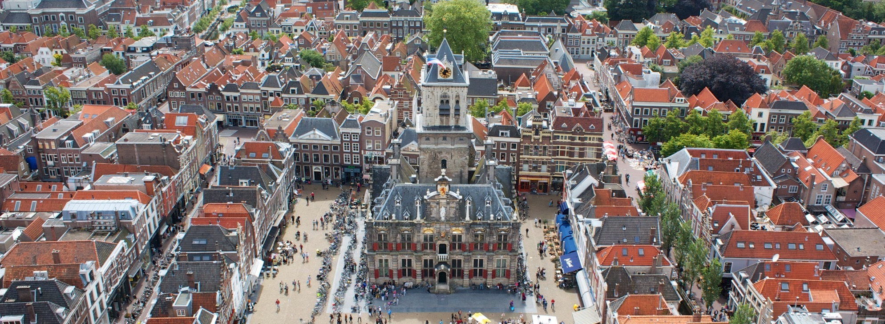
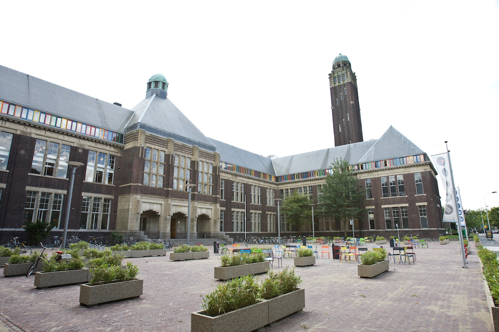
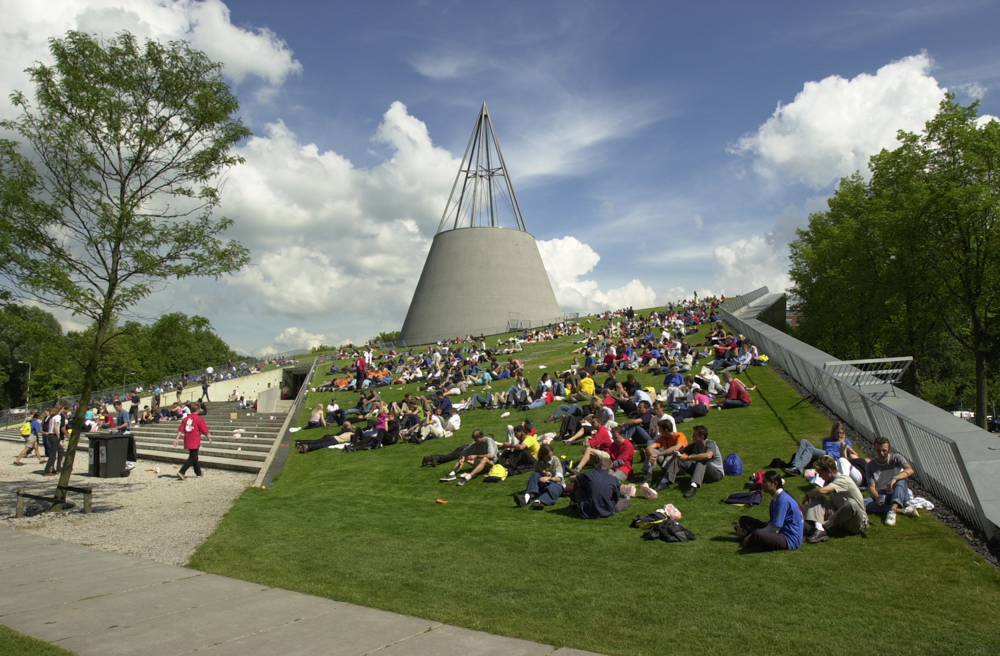

June 22–23, 2026 | Delft, the Netherlands

Open to a broad audience of cities, users, industry, and researchers. Pulse (Building 33), Landbergstraat 19, 2628 CE Delft.

A focused session for developers and technical experts. Faculty of Architecture (Building 8), Room BG.Oost.490, Julianalaan 134, 2628BL Delft.
Amsterdam Airport Schiphol is the nearest major airport, with a direct train to Delft taking approximately 40 minutes. Rotterdam The Hague Airport is also nearby and well connected by bus and train.
Delft is well connected by the Dutch national rail network. Plan your journey at 9292.nl (English available). Make sure to arrive at Delft station — not Delft-Zuid.
Free parking is available in designated TU Delft parking lots on campus.
Bus lines 40, 60, 64, 69, and 174 connect Delft station to the TU Delft campus. Hotels in the city centre are typically within 10–15 minutes walking distance from campus.
The following hotels are conveniently located near Delft city centre and the TU Delft campus:

TU Delft Campus, Delft